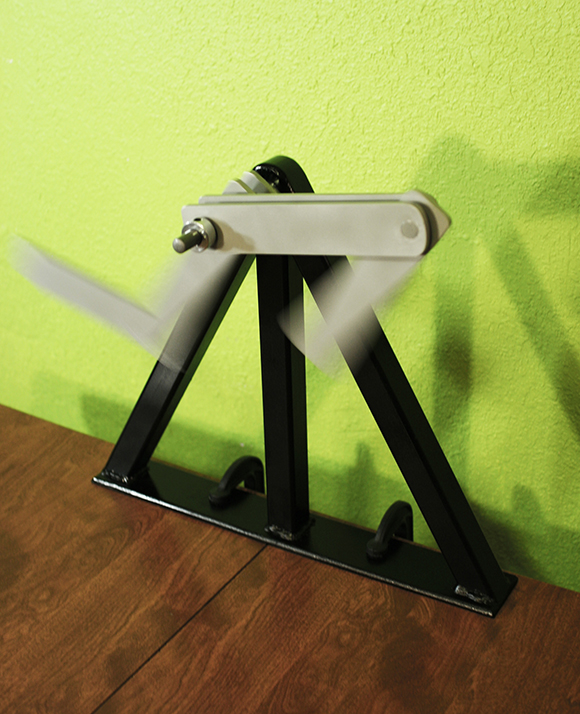

Double Pendulum Lab Demo for Stanford University
2013
Aluminum, Steel, Bearings
14" tall
A laboratory demo for Stanford University's Complexity Group. Consisting of two double pendulums, two single pendulums, and a stand, this set is easily transportable, quickly mounts to any surface, and is completely modular. Any combination of pendulums can be arranged on the stand, allowing the users to compare the movements of the different types of pendulums, or to see how two double pendulum's will quickly diverge even when given the same initial starting conditions.
